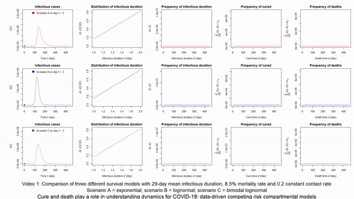
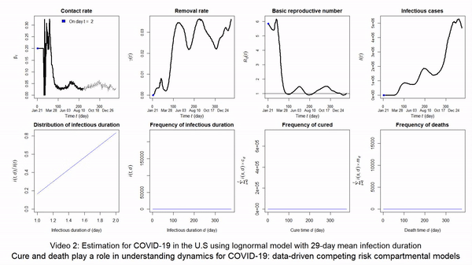

Software
2022-03-19
software.RmdR Shinny for COVID-19 Prediction
Role: Developer (2020)
Predicting COVID-19 cases and deaths for your own region at https://minlu.shinyapps.io/killCOVID19/

Author
Min Lu (Maintainer)
References
Lu M. and Ishwaran H. (2021). Cure and death play a role in understanding dynamics for COVID-19: data-driven competing risk compartmental models, with and without vaccination. PloS one 16(7): e0254397. [pdf] [supplemental pdf] [url] [.bib cite /exp]
Lu M. (2020). Dynamic Modeling COVID-19 for Comparing Containment Strategies in a Pandemic Scenario. Annals of Biostatistics & Biometric Application 4(1):1–4. [pdf] [url] [.bib cite /exp]
Vignettes for randomForestSRC
Role: Website Developer; Vignette Coauthor (2021–2022)
Fast Unified Random Forests with randomForestSRC 
Link for website and vignettes: https://luminwin.github.io/randomForestSRC/
Author
Hemant Ishwaran, Min Lu (Website Maintainer), Udaya B. Kogalur (Package Maintainer, ubk@kogalur.com)
R Package metavcov
Role: Developer (2017–2022)
Computing Within-Study Variances and Covariances, Visualization and Missing Data Solution for Multivariate Meta-Analysis
Download the package at https://cran.r-project.org/web/packages/metavcov/
Find Website and Vignettes at https://luminwin.github.io/metavcov/
Author
Min Lu (Maintainer)
References
Ahn S., Lu M., Lefevor G.T., Fedewa A.L. and Celimli S. (2015). “Application of Meta-Analysis in Sport and Exercise Science.” In An introduction to intermediate and advanced statistical analyses for sport and exercise scientists, eds. Ntoumanis N and Myers ND (John Wiley & Sons), chapter 11, 233–253. [url] [.bib cite /exp]
B. J. Becker. (2009) “Model-based meta-analysis”. In H. Cooper, L. V. Hedges, and J. C. Valentine, (Ed.), The handbook of research synthesis and meta-analysis, chapter 20, pages 377-395. Russell Sage Foundation.
Wei, Y., & Higgins, J. (2013). Estimating within study covariances in multivariate meta-analysis with multiple outcomes. Statistics in Medicine, 32(7), 119-1205.
R Shiny for Personalized Treatment
Role: Developer (2018)
Precision Surgical Therapy for Adenocarcinoma of the Esophagus and Esophagogastric Junction
Summarizing the sample at https://minlu.shinyapps.io/ICM_minlu/
Predicting for a new patient at https://minlu.shinyapps.io/newpatient/
Author
Min Lu (Maintainer)
References
Rice T.W., Lu M, Ishwaran H., and Blackstone, E.H. (2019). Precision Surgical Therapy for Adenocarcinoma of the Esophagus and Esophagogastric Junction: A Machine Learning Causal Analysis. Journal of Thoracic Oncology, 14(12): 2164-2175. [pdf] [url] [.bib cite /exp]